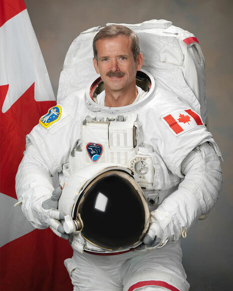

Chris Hadfield

Chris Hadfield in an astronaut suit
Chris Hadfield is:
a retired Canadian astronaut
the
first Canadian
to walk in space
served as the commander of the ISS
walked in space to help install the Canadarm2
For
more information about Chris Hadfield
, please click the link to his Wikipedia page.